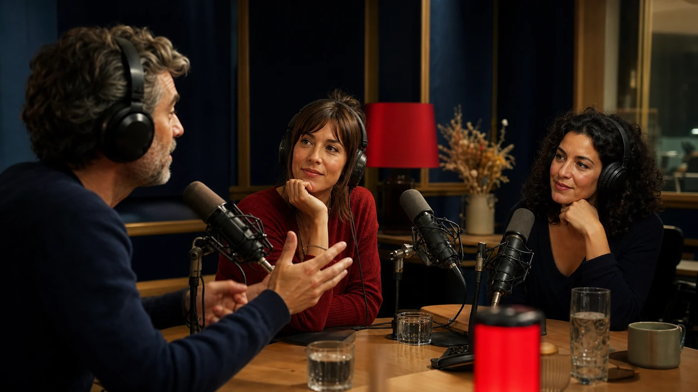
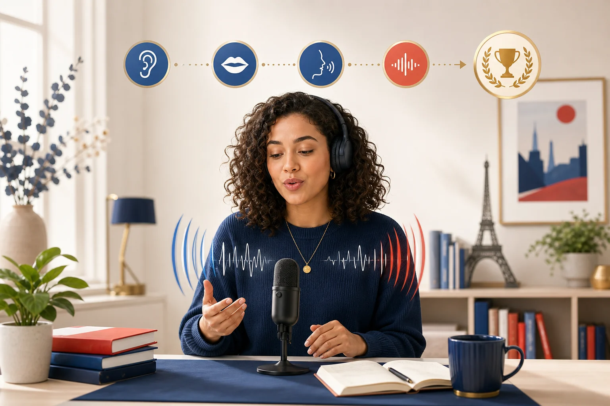
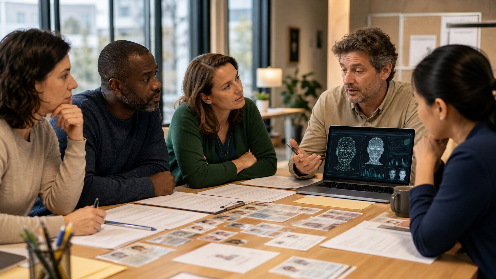
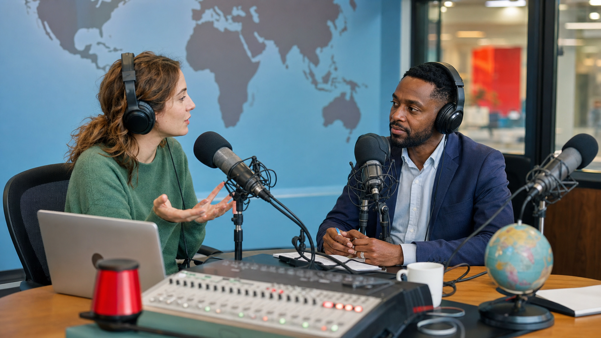
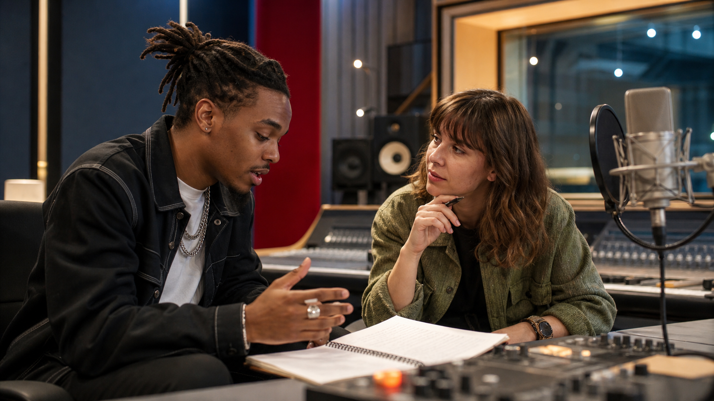

Compréhension orale
Ateliers par thèmes
Chaque thème est empaqueté comme un dossier : ouvrez-le pour accéder aux écoutes, ateliers, productions et activités de prononciation.
01Le conditionnel passé
Thème 01 : écoute, grammaire, oral, production et prononciation.
7 activités
Un choix de carrière regretté
Audio B2 avec 10 questions de compréhension et transcription réservée.
Ouvrir
Les regrets des Français
Audio B2 avec 10 questions de compréhension et transcription réservée.
OuvrirBilan d'un projet municipal raté
Audio B2 avec 10 questions de compréhension et transcription réservée.
OuvrirCompléter au conditionnel passé
15 espaces à compléter avec trois réponses plausibles et feedback immédiat.
S'entraînerLa roulette des regrets
Jeu de conversation : la roulette choisit la question, le professeur choisit l'étudiant.
JouerBilan critique et regret diplomatique
Texte guidé, expression du thème, connecteurs et lecture orale pour feedback.
Produire
Le conditionnel passé à voix haute
Voix modèle professionnelle, progression guidée et feedback Whisper immédiat.
S'entraîner02Hypothèses irréelles dans le passé
Thème 02 : écoute, grammaire, oral, production et prononciation.
9 activités

Si j'avais su...
Audio B2 avec 10 questions de compréhension et transcription réservée.
OuvrirLes grands et si de l'histoire
Audio B2 avec 10 questions de compréhension et transcription réservée.
OuvrirAccident évité de justesse
Audio B2 avec 10 questions de compréhension et transcription réservée.
OuvrirUne bourse refusée
Lecture B2 avec cinq questions d'inférence sur les hypothèses irréelles.
LirePassé composé, COD et accords
15 questions pour revoir avoir, être, COD placé avant, pronominaux et accords.
S'entraînerLa roulette des scénarios impossibles
Jeu de conversation : scénario passé, mission grammaticale et conséquence imaginaire.
JouerLe destin changé
Mini dialogue en binômes : une hypothèse passée entraîne une nouvelle conséquence logique.
ParlerHypothèses irréelles dans le passé
Texte guidé, expression idiomatique obligatoire et audio sauvegardé pour feedback professeur.
EnvoyerEt si tout avait été différent ?
Voix modèle professionnelle, progression guidée et feedback Whisper immédiat.
S'entraîner03Le subjonctif passé
Thème 03 : écoute, grammaire, oral, production et prononciation.
7 activités
Réactions après un scandale
Audio B2 avec 10 questions sur émotion, jugement, doute et responsabilité.
OuvrirUn film controversé
Interview critique pour repérer concession, réserve et subjonctif passé.
OuvrirRapport sur une crise sanitaire
Flash info B2 sur alerte publique, retard, responsabilité et confiance.
OuvrirSubjonctif passé en contexte
15 questions pour choisir entre indicatif, subjonctif présent et subjonctif passé.
S'entraînerTable ronde : décision polémique
Scénarios, rôles et relances pour débattre avec nuance.
DiscuterCommentaire critique
Texte guidé, subjonctif passé obligatoire et audio sauvegardé pour feedback.
ProduireEntre soulagement et regret
Subjonctif passé, progression guidée et feedback Whisper immédiat.
S'entraîner04Discours rapporté avancé
Thème 04 : écoute, grammaire, oral, production et prononciation.
7 activités
Ce qu'a vraiment dit le ministre
Audio B2 sur déclaration, reformulation médiatique et interprétation.
OuvrirRumeurs et vérités au bureau
Podcast B2 sur la transmission et la déformation d'une information.
OuvrirSommet international : déclarations
Flash info B2 sur positions publiques, promesses et réserves.
OuvrirTransformateur de déclarations
15 transformations pour vérifier temps, pronoms, questions et repères.
S'entraînerRoue de presse
Déclarer, rapporter, vérifier et corriger une information en classe.
SimulerCompte rendu fiable
Texte guidé, verbes introducteurs, question indirecte et audio pour feedback.
ProduireCe qu'elle avait vraiment annoncé
Concordance des temps, progression guidée et feedback Whisper immédiat.
S'entraîner05Médias et désinformation
Thème 05 : écoute, grammaire, oral, production et prononciation.
7 activités
Démêler le vrai du faux
Audio B2 sur vidéo virale, source douteuse et esprit critique.
OuvrirLes médias face aux algorithmes
Interview B2 sur bulles informationnelles, clics et régulation.
OuvrirAlerte aux infox
Flash info B2 sur deepfakes, IA, plateformes et responsabilités.
OuvrirMise en relief en contexte
15 questions pour choisir ce qui, ce que, ce dont, c'est qui et c'est que.
S'entraînerVérificateur d'infox
Scénarios, rôles et indices pour décider si une information est fiable.
JouerAnalyse d'une infox
Texte guidé, mise en relief, prudence argumentative et audio pour feedback.
ProduireCe qui compte, c'est de vérifier
Mise en relief, progression guidée et feedback Whisper immédiat.
S'entraîner06Intelligence artificielle et éthique numérique
Thème 06 : écoute, grammaire, oral, production et prononciation.
7 activités
L'IA au travail
Audio B2 sur productivité, formation, peur du remplacement et charte éthique.
Ouvrir
Reconnaissance faciale
Émission B2 sur libertés fondamentales, biais algorithmiques et moratoire.
OuvrirRégulation européenne
Flash info B2 sur l'AI Act, les niveaux de risque et les réactions des acteurs.
Ouvrir
Cause, conséquence et but
15 questions pour choisir les connecteurs et vérifier le subjonctif.
S'entraînerÉtant donné que l'IA...
Connecteurs, enchaînements, liaisons et audio final sauvegardé pour feedback.
S'entraînerComité éthique IA
Rôles, dossiers et décision argumentée avec cause, conséquence et finalité.
DébattreDécision technologique
Texte argumentatif, connecteurs obligatoires et audio sauvegardé pour feedback.
Produire07Justice sociale, égalité et citoyenneté
Thème 07 : écoute, grammaire, oral, production et prononciation.
7 activités
Égalité des chances
Audio B2 sur mobilité sociale, mérite, bourses et obstacles invisibles.
OuvrirEngagement citoyen
Audio B2 sur abstention, participation locale et démocratie citoyenne.
OuvrirDiscrimination à l'embauche
Chronique B2 sur testing, chiffres, sanctions et égalité réelle.
OuvrirConcession et opposition
15 questions pour choisir bien que, même si, malgré, cependant et le bon mode.
S'entraînerTable citoyenne
Activité type rulette avec rôle, scénario, contrainte grammaticale et expression idiomatique.
DébattrePrise de position citoyenne
Texte argumentatif, concession obligatoire, expression idiomatique et audio pour feedback.
ProduireBien que l'égalité reste fragile
Concession, opposition, enchaînements, liaisons et audio final sauvegardé pour feedback.
S'entraîner08Francophonie, registres et français oral authentique
Thème 08 : écoute, grammaire, oral, production et prononciation.
7 activités
Parler comme un Parisien
Audio B2 sur réductions orales, verlan, registres et expressions familières.
Ouvrir
La francophonie en mouvement
Audio B2 sur variantes belges, suisses, québécoises et africaines.
Ouvrir
Un rappeur et la langue
Portrait culturel sur registre littéraire, oralité, verlan et identité.
OuvrirRegistres et français oral
15 questions pour choisir la formulation adaptée et comprendre le sens.
S'entraînerStudio des registres
Activité type rulette avec situation, interlocuteur, registre et expression idiomatique.
ParlerPortrait de langue
Texte guidé, expression idiomatique obligatoire et audio pour feedback.
ProduireJ'sais pas, c'est chaud
Réductions orales, rythme, verlan et défi final sauvegardé pour feedback.
S'entraîner09Précision syntaxique et reformulation B2
Thème 09 : écoute, grammaire, oral, production et prononciation.
5 activités
Mettre les points sur les i
Audio France/Québec sur reformulation, données vérifiées et structures B2.
Écouter15 décisions grammaticales
Voix passive, futur antérieur, ce dont, gérondif, participe présent et accords.
S'entraînerStudio de reformulation
Roulette orale avec source, rôle, contrainte grammaticale et expression idiomatique.
ParlerNote de synthèse + audio
Écrire une synthèse courte sur la ville intelligente et sauvegarder le dernier audio.
ProduireGroupes rythmiques B2
Quatre sections guidées et un défi final avec audio professionnel.
Prononcer